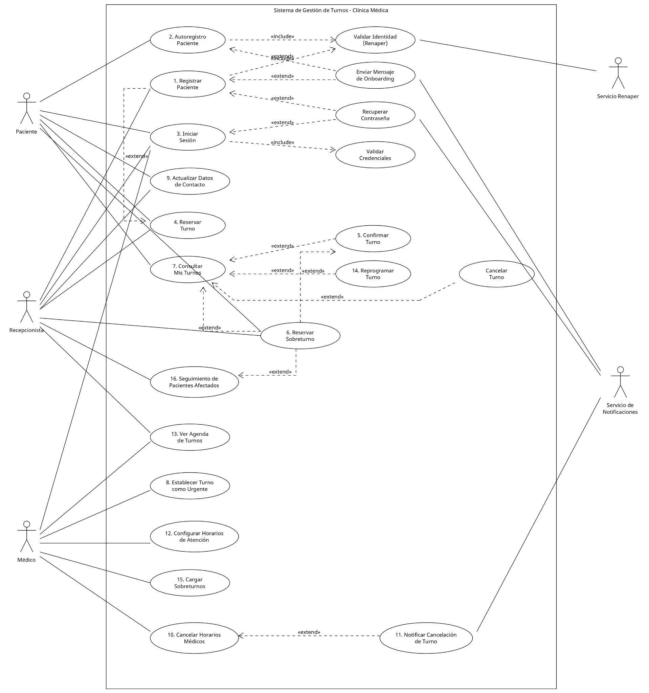
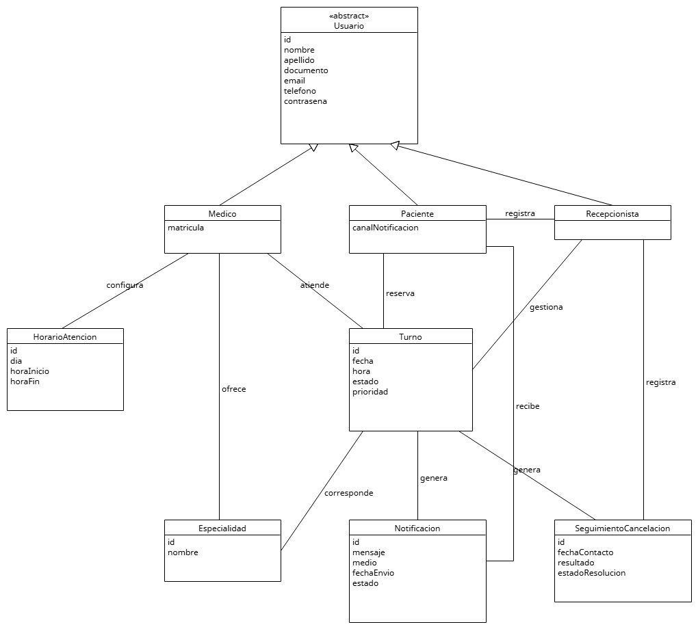

5 · 6
Diagramas UML
Diagrama de casos de uso y diagrama de clases del sistema. Hacé clic en cualquier diagrama para verlo en tamaño completo.
5
Diagrama de Casos de Uso
Actores (Paciente, Recepcionista, Médico, Servicio Renaper y Servicio de Notificaciones) y sus interacciones con el sistema.

🔍 Clic para ampliar · 16 casos de uso + relaciones «include» y «extend»
Abrir en pestaña nueva ↗
6
Diagrama de Clases
Modelo de dominio: Usuario (abstracto) con sus especializaciones Médico, Paciente y Recepcionista, y sus asociaciones con turnos, horarios, notificaciones y seguimientos.

🔍 Clic para ampliar · Clases, atributos y relaciones
Abrir en pestaña nueva ↗
Clases principales: Usuario (abstracto: id, nombre, apellido, documento,
email, teléfono, contraseña) · Médico (matrícula) · Paciente (canal de notificación) ·
Recepcionista · HorarioAtención · Turno (fecha, hora, estado, prioridad) · Especialidad ·
Notificación (mensaje, medio, fecha de envío, estado) · SeguimientoCancelación
(fecha de contacto, resultado, estado de resolución).